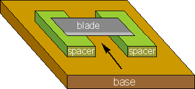

I learned about this design for a D.I.Y. balsa stripper when building my first indoor FF model, a Parlor Mite from Micro-X. For quick and easy stripping of light wood, a few of these are indispensible.
While only useful for one thickness of strip, it takes but a few minutes to make several versions for different sizes. I like to make the base of hard balsa that is at least 1/8" thick. The spacer blocks are also balsa, of whatever thickness you need for the strip you want to cut. I like to space them a little wider than the depth of the intended cut so that a square piece of stock can be easily made.
The cutting blade is glued onto the top of the spacer blocks across the gap. I have used modern super glues, but find it is tough to bond to the steel. "Rivets" of sawdust or baking soda help, but from time to time they need regluing. Likely because I have been trying to cut some really hard balsa. I expect that 5 minute epoxy, or Ambroid would work better. Just be sure to get a good pool of glue on each end of the blade. This is one of the few places in model building where extra glue isn't bad.
The prefered blade is the sharpest and thinnest you can find. The most appropriate readily available blade is found in twin blade disposable razors. If you are careful, the head of the razor can be teased apart with an X-Acto knife or jeweler's screwdriver, yeilding 2 of the sharpest little blades commonly available. They can be carefully broken in half with fine pliers, or cut with some tin snips, for smaller strippers. Be Extremely careful when handling these blades!! They will cut you in an instant, and I will not be held responsible. If you think you are old enough to do it on your own, but are still in school, get help! Your parents will be really impressed when you ask them, and might even let you stay out later this weekend because you are so responsible.
Once the glue is dry, you just feed the stock into the gap towards the sharp edge of the blade as indicated by the arrow. With a bit of care, you can feel where cutting gets easier and harder, indicating the density and stiffness variations of a strip of wood.
When building my Micro-X kit, I made versions with spacers at 1/32, 1/16, 3/32, 1/8 and 3/16. Since then, they have been handy when I didn't want to adjust one of the other strippers, or just wanted to strip a small piece of scrap.
Copyright 1998, Thayer Syme. All rights reserved